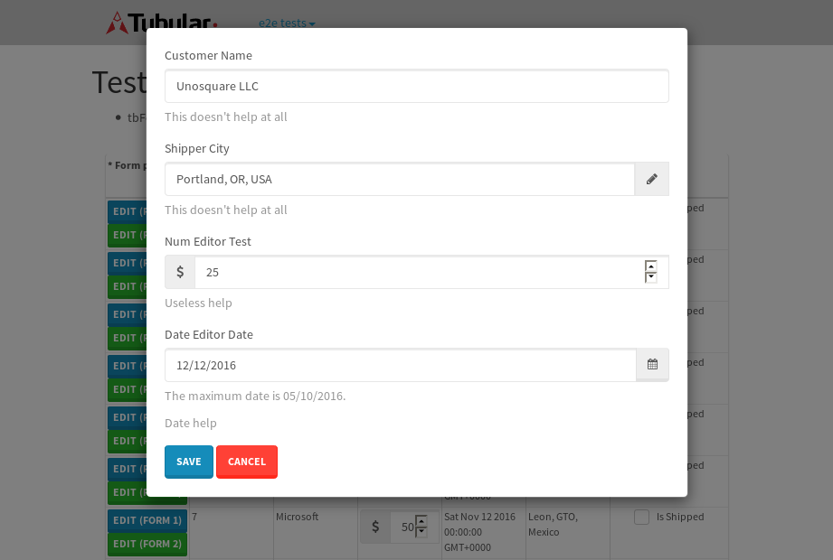
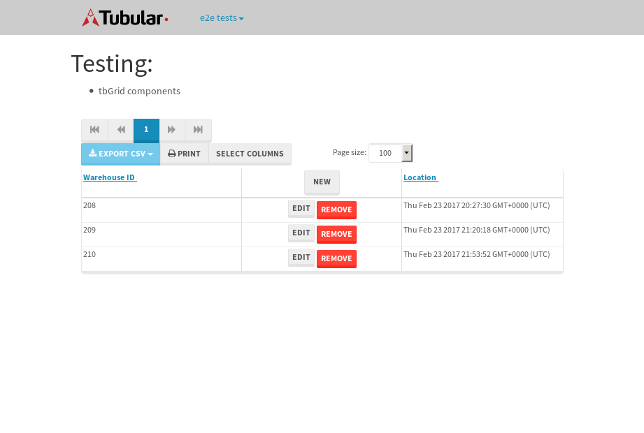

tbColumn.Grid Sorting - 26.45sTests: 5Skipped: 0Failures: 0 should sort data in ascending order then on descending order when sorting by Order Id column - 5.64sTests passed: 100.00%should order data in ascending order when click-sorting an unsorted text column - 4.895sTests passed: 100.00%should order data in descending order when click-sorting an ascending-sorted text column - 5.516sTests passed: 100.00%should order data in ascending order when click-sorting an unsorted date column - 4.93sTests passed: 100.00%should order data in descending order when click-sorting twice an unsorted date column - 5.468sTests passed: 100.00%
tbEmptyForm - 3.219sTests: 3Skipped: 0Failures: 0 should have an empty required field - 0.699sTests passed: 100.00%should not be able to click on save - 0.46sTests passed: 100.00%should load default value for numeric field - 0.478sTests passed: 100.00%
Tubular Filters.tbColumnFilter - 107.696sTests: 12Skipped: 0Failures: 0 should cancel filtering when clicking outside filter-popover - 8.819sTests passed: 100.00%should disable Value text-input for "None" filter - 6.895sTests passed: 100.00%should disable apply button for "None" filter - 6.699sTests passed: 100.00%should decorate popover button when showing data is being filtered for its column - 12.221sTests passed: 100.00%should correctly filter data for the "Equals" filtering option - 7.956sTests passed: 100.00%should correctly filter data for the "Not Equals" filtering option - 8.65sTests passed: 100.00%should correctly filter data for the "Contains" filtering option - 8.633sTests passed: 100.00%should correctly filter data for the "Not Contains" filtering option - 8.607sTests passed: 100.00%should correctly filter data for the "Starts With" filtering option - 6.914sTests passed: 100.00%should correctly filter data for the "Not Starts With" filtering option - 6.955sTests passed: 100.00%should correctly filter data for the "Ends With" filtering option - 6.77sTests passed: 100.00%should correctly filter data for the "Not Ends With" filtering option - 7.475sTests passed: 100.00%
Tubular Filters.tbColumnDateTimeFilter - 134.704sTests: 12Skipped: 0Failures: 0 should cancel filtering when clicking outside filter-popover - 7.255sTests passed: 100.00%should disable Value text-input for "None" filter - 6.441sTests passed: 100.00%should disable apply button for "None" filter - 6.612sTests passed: 100.00%should clear filtering when clicking on Clean button - 17.744sTests passed: 100.00%should decorate popover button when showing data is being filtered for its column - 11.69sTests passed: 100.00%should correctly filter data for the "Equals" filtering option - 6.762sTests passed: 100.00%should correctly filter data for the "Not Equals" filtering option - 7.259sTests passed: 100.00%should correctly filter data for the "Between" filtering option - 12.193sTests passed: 100.00%should correctly filter data for the "Greater-or-equal" filtering option - 12.142sTests passed: 100.00%should corretlly filter data for the "Greater" filtering option - 11.949sTests passed: 100.00%should correctly filter data for the "Less-or-equal" filtering option - 12.174sTests passed: 100.00%should correctly filter data for the "Less" filtering option - 11.727sTests passed: 100.00%
Tubular Filters.tbColumnOptionsFilter - 81.012sTests: 3Skipped: 0Failures: 0 should cancel filtering when clicking outside filter-popover - 8.087sTests passed: 100.00%should decorate popover button when showing data is being filtered for its column - 12.098sTests passed: 100.00%should filter column-elements in accordance to the selected filter when selecting a single option - 49.922sTests passed: 100.00%
Tubular Filters.tbTextSearch - 48.412sTests: 5Skipped: 0Failures: 0 min-chars is not set - 0.964sTests passed: 100.00%should filter data in searchable-column customer name to matching inputted text, starting from 3 characters - 6.868sTests passed: 100.00%should filter data in searchable-column shipper city to matching inputted text, starting from 3 characters - 12.198sTests passed: 100.00%should show clear button when there is inputted text only - 6.701sTests passed: 100.00%should clear filtering when clicking clear button - 16.245sTests passed: 100.00%
tbForm related components.tbCheckboxField - 6.696sTests: 2Skipped: 0Failures: 0 should save changes on "SAVE" - 2.941sTests passed: 100.00%should discard changes on "CANCEL" - 2.095sTests passed: 100.00%
tbForm related components.tbDropDownEditor - 11.195sTests: 5Skipped: 0Failures: 0 should set initial input value to the value of "value" attribute when defined - 1.777sTests passed: 100.00%should show the component name value in a label field when "showLabel" attribute is true - 1.877sTests passed: 100.00%should show a help field equal to this attribute, is present - 1.675sTests passed: 100.00%should submit modifications to item/server when clicking form "Save" - 2.757sTests passed: 100.00%should NOT submit modifications to item/server when clicking form "Cancel" - 2.482sTests passed: 100.00%
tbForm related components.tbTextArea - 16.547sTests: 7Skipped: 0Failures: 0 should set initial input value to the value of "value" attribute when defined - 1.723sTests passed: 100.00%should be invalidated when the number of chars is not in the range of "min" and "max" attributes - 2.337sTests passed: 100.00%should show the component name value in a label field when "showLabel" attribute is true - 2.288sTests passed: 100.00%should show a help field equal to this attribute, is present - 1.871sTests passed: 100.00%should require the field when the attribute "required" is true - 1.882sTests passed: 100.00%should submit modifications to item/server when clicking form "Save" - 2.862sTests passed: 100.00%should NOT submit modifications to item/server when clicking form "Cancel" - 2.867sTests passed: 100.00%
tbForm related components.tbDateEditor - 12.359sTests: 6Skipped: 0Failures: 0 should set initial date value to the value of "value" attribute when defined - 1.476sTests passed: 100.00%should be invalidated when the date is not in the range of "min" and "max" attributes - 1.94sTests passed: 100.00%should show the component name value in a label field when "showLabel" attribute is true - 1.965sTests passed: 100.00%should show a help field equal to this attribute, is present - 1.804sTests passed: 100.00%should submit modifications to item/server when clicking form "Save" - 2.162sTests passed: 100.00%should NOT submit modifications to item/server when clicking form "Cancel" - 2.248sTests passed: 100.00%
tbForm related components.tbTypeaheadEditor - 15.497sTests: 7Skipped: 0Failures: 0 should show an options list when there is an API-info/component entered-data - 2.277sTests passed: 100.00%should select the option clicked - 2.033sTests passed: 100.00%should show a "delete" button when an option/match is selected, and delete the option if button is clicked - 2.245sTests passed: 100.00%should show a label value equal to the component name when "showLabel" attribue is true - 1.66sTests passed: 100.00%should require a value when "require" attribute is true - 1.859sTests passed: 100.00%should submit modifications to item/server when clicking form "Save" - 2.914sTests passed: 100.00%should NOT submit modifications to item/server when clicking form "Cancel" - 1.964sTests passed: 100.00%
tbForm related components.tbSimpleEditor - 18.67sTests: 9Skipped: 0Failures: 1 should set initial input value to the value of "value" attribute when defined - 1.616sTests passed: 100.00%should be invalidated when the number of chars is not in the range of "min" and "max" attributes - 1.976sTests passed: 100.00%should show the component name value in a label field when "showLabel" attribute is true - 1.659sTests passed: 100.00%should set input placeholder to the value of "placeholder" attribute - 2.137sTests passed: 100.00%should validate the control using the "regex" attribute, if present - 1.772sTests passed: 100.00%should show a help field equal to this attribute, is present - 1.96sExpected 'This doesn't help at all' to match 'This does not help at all'.✗Tests passed: 0.00%should require the field when the attribute "required" is true - 1.97sTests passed: 100.00%should submit modifications to item/server when clicking form "Save" - 2.975sTests passed: 100.00%should NOT submit modifications to item/server when clicking form "Cancel" - 2.077sTests passed: 100.00%
tbForm related components.tbNumericEditor - 16.856sTests: 7Skipped: 0Failures: 0 should set initial component value to the value of "value" attribute when defined - 1.829sTests passed: 100.00%should be invalidated when the entered number is not in the range of "min" and "max" attributes - 3.561sTests passed: 100.00%should show the component name value in a label field when "showLabel" attribute is true - 1.693sTests passed: 100.00%should show a help field equal to this attribute, is present - 2.084sTests passed: 100.00%should require the field when the attribute "required" is true - 2.003sTests passed: 100.00%should submit modifications to item/server when clicking form "Save" - 2.979sTests passed: 100.00%should NOT submit modifications to item/server when clicking form "Cancel" - 2.135sTests passed: 100.00%
tbForm Connection Error NoModelKey - 2.568sTests: 1Skipped: 0Failures: 0 tbForm connection error functionality - 0.446sTests passed: 100.00%
tbForm Connection Error NoServerUrl - 4.291sTests: 1Skipped: 0Failures: 0 tbForm connection error functionality - 0.575sTests passed: 100.00%
tbGridComponents - 7.704sTests: 6Skipped: 0Failures: 1 should add item with newRow method - 2.078sTests passed: 100.00%should add item with newRow method and cancel action - 0.756sTests passed: 100.00%should update item with tbSaveButton - 0.628sFailed: ElementNotVisibleError✗Tests passed: 0.00%should NOT update item on cancel Update action - 0.795sTests passed: 100.00%should remove item with tbRemoveButton - 1.078sTests passed: 100.00%should NOT remove item on cancel Remove action - 0.926sTests passed: 100.00%
tbGridPager.navigation buttons - 9.363sTests: 1Skipped: 0Failures: 0 should perform no action when clicking on the numbered navigation button corresponding to the current-showing results page - 1.467sTests passed: 100.00%
tbGridPager.navigation buttons.first/non-last results page related functionallity - 4.268sTests: 2Skipped: 0Failures: 0 should disable "first" and "previous" navigation buttons when in first results page - 2.232sTests passed: 100.00%should enable "last" and "next" navigation buttons when in a results page other than last - 2.036sTests passed: 100.00%
tbGridPager.navigation buttons.last/non-first results page related functionallity - 3.627sTests: 2Skipped: 0Failures: 0 should disable "last" and "next" navigation buttons when in last results page - 1.761sTests passed: 100.00%should enable "first" and "previous" navigation buttons when in a results page other than first - 1.866sTests passed: 100.00%
tbGridPager.page navigation - 8.012sTests: 5Skipped: 0Failures: 0 should go to next results page when clicking on next navigation button - 1.725sTests passed: 100.00%should go to previous results page when clicking on previous navigation button - 1.949sTests passed: 100.00%should go to last results page when clicking on last navigation button - 1.737sTests passed: 100.00%should go to first results page when clicking on first navigation button - 1.472sTests passed: 100.00%should go to corresponding results page when clicking on a numbered navigation button - 1.129sTests passed: 100.00%
tbGridPagerInfo - 4.86sTests: 2Skipped: 0Failures: 0 should show text in accordance to numbered of filter rows and current results-page - 1.838sTests passed: 100.00%should show count in footer - 0.581sTests passed: 100.00%
tbPageSizeSelctor - 11.359sTests: 4Skipped: 0Failures: 0 should filter up to 10 data rows per page when selecting a page size of "10" - 2.275sTests passed: 100.00%should filter up to 20 data rows per page when selecting a page size of "20" - 1.686sTests passed: 100.00%should filter up to 50 data rows per page when selecting a page size of "50" - 2.819sTests passed: 100.00%should filter up to 100 data rows per page when selecting a page size of "100" - 2.745sTests passed: 100.00%
tbRowSelectable - 9.666sTests: 2Skipped: 0Failures: 0 selected rows - 5.11sTests passed: 100.00%unselected rows - 2.712sTests passed: 100.00%
tbSingleForm - 17.939sTests: 8Skipped: 1Failures: 0 should load correct info - 0s***Skipped***Tests passed: 0%should change customer name - 2.591sTests passed: 100.00%should save it - 2.916sTests passed: 100.00%should clear the inputs - 2.268sTests passed: 100.00%should update - 2.788sTests passed: 100.00%should reset editor - 2.309sTests passed: 100.00%should not save if not Changes - 2.333sTests passed: 100.00%should not be able to click on save - 2.733sTests passed: 100.00%
{kind=link}
{kind=link}